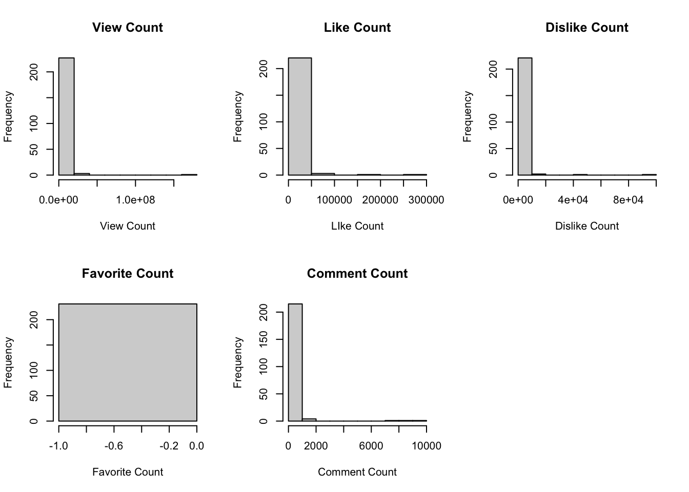
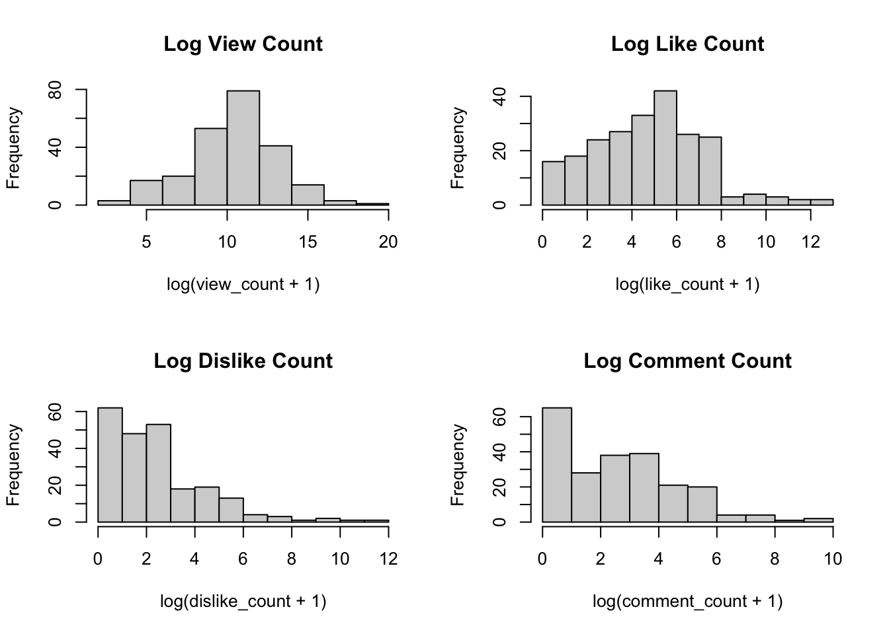

momentum_walk <- function(n, p) {
# check n is a single positive integer
if(length(n) != 1 || is.na(n) || !is.numeric(n) ||
n <= 0 || n != floor(n)) {
stop("n must be a positive integer.")
}
# check p is a single number between 0 and 1
if (length(p) != 1 || is.na(p) || !is.numeric(p) ||
p < 0 || p > 1) {
stop("p must be a number between 0 and 1.")
}
# define 4 posiible directions
directions <- matrix(
c(1, 0, # right
-1, 0, # left
0, 1, # up
0, -1), # down
ncol = 2,
byrow = TRUE
)
# start at origin
position <- c(0,0)
# choose 1st direction
pre_direction <- sample(1:4, 1)
# first step
position <- position + directions[pre_direction, ]
# remaining steps
if (n > 1) {
for (i in 2:n) {
if (runif(1) < p) {
current_direction <- pre_direction
} else {
current_direction <- sample(1:4, 1)
}
position <- position + directions[current_direction, ]
pre_direction <- current_direction
}
}
return(position)
}Datasci506_hw2
This is the link to my repo on github:https://github.com/tingyuuucc/stats506-HW1
Problem 1: Random Walk with Momentum
a. Simulation function:
momentum_walk(10, 0.6)[1] 1 5momentum_walk(10, 0.6)[1] -1 3b. Implement the simulation
version 1
momentum_walk1 <- function(n, p) {
if (length(n) != 1 || is.na(n) || !is.numeric(n) ||
n <= 0 || n != floor(n)) {
stop("n must be a positive integer.")
}
if (length(p) != 1 || is.na(p) || !is.numeric(p) ||
p < 0 || p > 1) {
stop("p must be a number between 0 and 1.")
}
directions <- matrix(
c(1, 0,
-1, 0,
0, 1,
0, -1),
ncol = 2,
byrow = TRUE
)
position <- c(0, 0)
prev_direction <- sample(1:4, 1)
position <- position + directions[prev_direction, ]
if (n > 1) {
for (i in 2:n) {
# preserve the previous direction with probability p
if (runif(1) < p) {
current_direction <- prev_direction
} else {
current_direction <- sample(1:4, 1)
}
position <- position + directions[current_direction, ]
prev_direction <- current_direction
}
}
return(position)
}version 2
momentum_walk2 <- function(n, p) {
if (length(n) != 1 || is.na(n) || !is.numeric(n) ||
n <= 0 || n != floor(n)) {
stop("n must be a positive integer.")
}
if (length(p) != 1 || is.na(p) || !is.numeric(p) ||
p < 0 || p > 1) {
stop("p must be a number between 0 and 1.")
}
directions <- matrix(
c(1, 0,
-1, 0,
0, 1,
0, -1),
ncol = 2,
byrow = TRUE
)
first_direction <- sample(1:4, 1)
previous_direction <- first_direction
if (n > 1) {
remaining_directions <- sapply(seq_len(n - 1), function(i) {
if (runif(1) < p) {
current_direction <- previous_direction
} else {
current_direction <- sample(1:4, 1)
}
previous_direction <<- current_direction
return(current_direction)
})
# combine all step directions
step_directions <- c(first_direction, remaining_directions)
} else {
step_directions <- first_direction
}
# add all step to obtain the final position
final_position <- colSums(directions[step_directions, , drop = FALSE])
return(final_position)
}# demonstrate the loop version
momentum_walk1(10, 0.6)[1] -5 1# demonstrate the apply version
momentum_walk2(10, 0.6)[1] 0 -2# demonstrate both functions with 1000 steps
momentum_walk1(1000, 0.6)[1] 15 -39momentum_walk2(1000, 0.6)[1] -38 56momentum_walk1() uses a for loop to generate each step and update the position. momentum_walk2() uses sapply() to generate the sequence of directions, then sums the corresponding movements to obtain the final position.
ChatGPT helped me figure out a more briefly way to show my result.
c. Reproducibility
set.seed(123)
momentum_walk1(10, 0.6)[1] 1 7# run again
set.seed(123)
momentum_walk1(10, 0.6)[1] 1 7# n = 1000
set.seed(123)
momentum_walk1(1000, 0.6)[1] -46 -4set.seed(123)
momentum_walk1(1000, 0.6)[1] -46 -4I used set.seed(123) before each simulation. Setting the same seed resets R’s random-number generator to the same starting state, so the same sequence of random numbers is generated and the simulation produces the same result each time.
d. Does momentum matter?
i.
set.seed(123)
p_values <- c(0, 0.5, 0.9)
final <- sapply(
p_values,
function(p) momentum_walk1(1000, p)
)
# calculate final fro the orign
distances <- sqrt(colSums(final^2))
results <- data.frame(
p = p_values,
x = final[1, ],
y = final[2, ],
distance = distances
)
results p x y distance
1 0.0 4 16 16.49242
2 0.5 79 23 82.28001
3 0.9 -105 5 105.11898ii. In this simulation, the final distance increases as the momentum probability increases. The distances are 16.49 for p = 0, 82.28 for p = 0.5, and 105.12 for p = 0.9.
iii. Higher momentum makes the particle more likely to continue moving in the same direction, so it tends to travel farther from the starting point.
e. Monte Carlo simulation
set.seed(123)
p_values <- c(0, 0.25, 0.5, 0.75, 0.9)
# calculate mean final distance
mean_distance <- sapply(p_values, function(p) {
distances <- replicate(1000,{
position <- momentum_walk1(1000, p)
sqrt(position[1]^2 + position[2]^2)
})
mean(distances)
})
# create a table
results <- data.frame(
p = p_values,
mean_distance = mean_distance
)
results p mean_distance
1 0.00 28.06436
2 0.25 34.79672
3 0.50 47.21086
4 0.75 73.47445
5 0.90 123.15203The mean final distance increases substantially as p increases, from about 28.06 at p = 0 to about 123.15 at p = 0.9. This suggests that stronger momentum leads to greater displacement from the starting point on average.
Problem 2:Monte Carlo Simulation of Campus Bus Arrivals
set.seed(123)
# simulated days
n_days <- 1000
# simulate passenger counts
morning <- rowSums(matrix(rpois(n_days * 3, lambda = 4), nrow = n_days))
p_9 <- rnorm(n_days, mean = 45, sd = 4)
midday <- rowSums(matrix(rpois(n_days * 6, lambda = 15), nrow = n_days))
peak_16 <- rnorm(n_days, mean = 55, sd = 5)
evening <- rowSums(matrix(rpois(n_days * 6, lambda = 9), nrow = n_days))
total_passengers <- morning + p_9 + midday + peak_16 + evening
mean(total_passengers)[1] 256.2192Using 10,000 simulated days, the estimated average total number of passengers per day is 256.22.
Problem 3: Linear Regression
a.
# import data
youtube <- read.csv(
"https://raw.githubusercontent.com/rfordatascience/tidytuesday/master/data/2021/2021-03-02/youtube.csv"
)
# remove variables
youtube_clean <- youtube[, !names(youtube) %in% c(
"brand",
"superbowl_ads_dot_com_url",
"youtube_url",
"id",
"etag",
"published_at",
"title",
"description",
"thumbnail",
"channel_title"
)]
dim(youtube_clean)[1] 247 15After removing variables that could identify a specific commercial, the resulting dataset contains 247 observations and 15 variables.
b.
par(mfrow = c(2,3))
hist(youtube_clean$view_count,
main = "View Count",
xlab = "View Count")
hist(youtube_clean$like_count,
main = "Like Count",
xlab = "LIke Count")
hist(youtube_clean$dislike_count,
main = "Dislike Count",
xlab = "Dislike Count")
hist(youtube_clean$favorite_count,
main = "Favorite Count",
xlab = "Favorite Count")
hist(youtube_clean$comment_count,
main = "Comment Count",
xlab = "Comment Count")
summary(youtube_clean[, c(
"view_count",
"like_count",
"dislike_count",
"favorite_count",
"comment_count"
)]) view_count like_count dislike_count favorite_count
Min. : 10 Min. : 0 Min. : 0.0 Min. :0
1st Qu.: 6431 1st Qu.: 19 1st Qu.: 1.0 1st Qu.:0
Median : 41379 Median : 130 Median : 7.0 Median :0
Mean : 1407556 Mean : 4146 Mean : 833.5 Mean :0
3rd Qu.: 170016 3rd Qu.: 527 3rd Qu.: 24.0 3rd Qu.:0
Max. :176373378 Max. :275362 Max. :92990.0 Max. :0
NA's :16 NA's :22 NA's :22 NA's :16
comment_count
Min. : 0.00
1st Qu.: 1.00
Median : 10.00
Mean : 188.64
3rd Qu.: 50.75
Max. :9190.00
NA's :25 # transform right-skewed engagement variables
youtube_clean$log_view_count <- log(youtube_clean$view_count + 1)
youtube_clean$log_like_count <- log(youtube_clean$like_count + 1)
youtube_clean$log_dislike_count <- log(youtube_clean$dislike_count + 1)
youtube_clean$log_comment_count <- log(youtube_clean$comment_count + 1)
# examine distributions after log transformation
par(mfrow = c(2, 2))
hist(youtube_clean$log_view_count,
main = "Log View Count",
xlab = "log(view_count + 1)")
hist(youtube_clean$log_like_count,
main = "Log Like Count",
xlab = "log(like_count + 1)")
hist(youtube_clean$log_dislike_count,
main = "Log Dislike Count",
xlab = "log(dislike_count + 1)")
hist(youtube_clean$log_comment_count,
main = "Log Comment Count",
xlab = "log(comment_count + 1)")
view_count, like_count, dislike_count, and comment_count are strongly right-skewed, so I transformed them using log(x + 1) before using them as outcomes in linear regression. favorite_count is not appropriate as an outcome because it has essentially no variation, with all observed values equal to zero.
ChatGPT helped me figure out a clearer way to show my result by using log.
c.Fitting linear regression models
# define the transformed outcomes
outcomes <- c(
"log_view_count",
"log_like_count",
"log_dislike_count",
"log_comment_count"
)
# define 7 binary
characteristics <- c(
"funny",
"show_product_quickly",
"patriotic",
"celebrity",
"danger",
"animals",
"use_sex"
)
results <- do.call(rbind, lapply(outcomes, function(y) {
do.call(rbind, lapply(characteristics, function(x) {
# fit the model with year as a continuous
model <- lm(
reformulate(c(x, "year"), response = y),
data = youtube_clean
)
# extract the coefficient and p-value for the commercial characteristic
coef_table <- coef(summary(model))
data.frame(
outcome = y,
characteristic = x,
estimate = coef_table[2, "Estimate"],
p_value = coef_table[2, "Pr(>|t|)"]
)
}))
}))
results outcome characteristic estimate p_value
1 log_view_count funny 0.52984356 0.20510610
2 log_view_count show_product_quickly 0.20898031 0.60072225
3 log_view_count patriotic 0.13692497 0.78391866
4 log_view_count celebrity -0.01898556 0.96288885
5 log_view_count danger 0.66678076 0.09406479
6 log_view_count animals -0.17326980 0.64669142
7 log_view_count use_sex -0.29629543 0.49051595
8 log_like_count funny 0.36019066 0.34005646
9 log_like_count show_product_quickly 0.16825538 0.64047730
10 log_like_count patriotic 0.49311233 0.28968290
11 log_like_count celebrity 0.26297830 0.47787826
12 log_like_count danger 0.62526219 0.08031647
13 log_like_count animals 0.02459257 0.94282914
14 log_like_count use_sex -0.32497453 0.40008928
15 log_dislike_count funny 0.04148774 0.89580597
16 log_dislike_count show_product_quickly 0.24290875 0.42097425
17 log_dislike_count patriotic 0.66965405 0.08563747
18 log_dislike_count celebrity -0.28325315 0.36162721
19 log_dislike_count danger 0.18514931 0.53794989
20 log_dislike_count animals -0.07378053 0.79742453
21 log_dislike_count use_sex -0.38888066 0.22927926
22 log_comment_count funny 0.04746590 0.87934573
23 log_comment_count show_product_quickly 0.34602814 0.24685774
24 log_comment_count patriotic 0.51478460 0.16854269
25 log_comment_count celebrity 0.22806291 0.45558834
26 log_comment_count danger 0.10642262 0.72095533
27 log_comment_count animals -0.19176266 0.49906680
28 log_comment_count use_sex -0.34939714 0.27353634# identify statistically significant associations
significant_results <- results[results$p_value < 0.05, ]
# determine the direction
significant_results$direction <- ifelse(
significant_results$estimate > 0,
"Positive",
"Negative"
)
significant_results[1] outcome characteristic estimate p_value direction
<0 rows> (or 0-length row.names)At the 0.05 significance level, none of the 7 commercial characteristics had a statistically significant association with any of the engagement outcomes after adjusting for year. Therefore, there are no statistically significant positive or negative associations to report.
view_results <- results[
results$outcome == "log_view_count",
]
view_results[which.max(view_results$estimate), ] outcome characteristic estimate p_value
5 log_view_count danger 0.6667808 0.09406479danger had the largest positive estimated association with view counts, with an estimated coefficient of 0.667.
d. Estimating regression coefficients using matrix algebra
dat <- youtube_clean[
complete.cases(youtube_clean[, c("log_view_count", "danger", "year")]),
]
# construct the response vector
y <- dat$log_view_count
# construct the design matrix with an intercept
X <- cbind(
Intercept = 1,
danger = dat$danger,
year = dat$year
)
# estimate regression coefficients using matrix algebra
beta_hat <- solve(t(X) %*% X) %*% t(X) %*% y
beta_hat [,1]
Intercept -31.39149243
danger 0.66678076
year 0.02065641model_lm <- lm(
log_view_count ~ danger + year,
data = dat
)
coef(model_lm) (Intercept) dangerTRUE year
-31.39149243 0.66678076 0.02065641 #compare the two sets of coeff
cbind(
Matrix = as.vector(beta_hat),
LM = coef(model_lm)
) Matrix LM
(Intercept) -31.39149243 -31.39149243
dangerTRUE 0.66678076 0.66678076
year 0.02065641 0.02065641